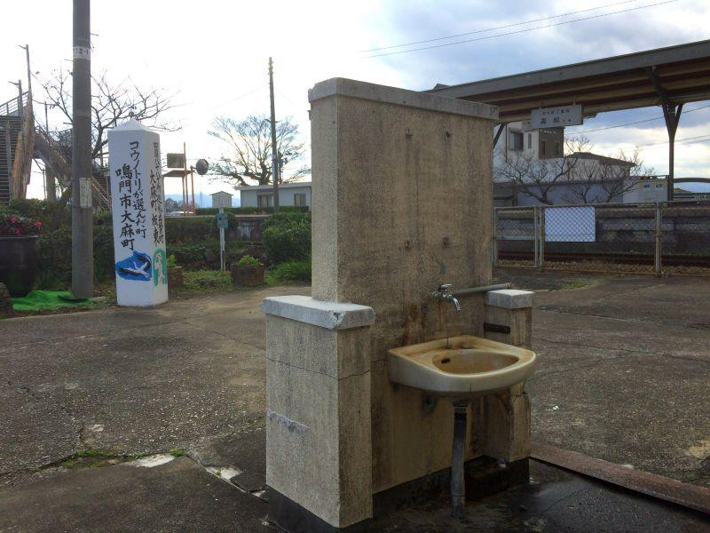
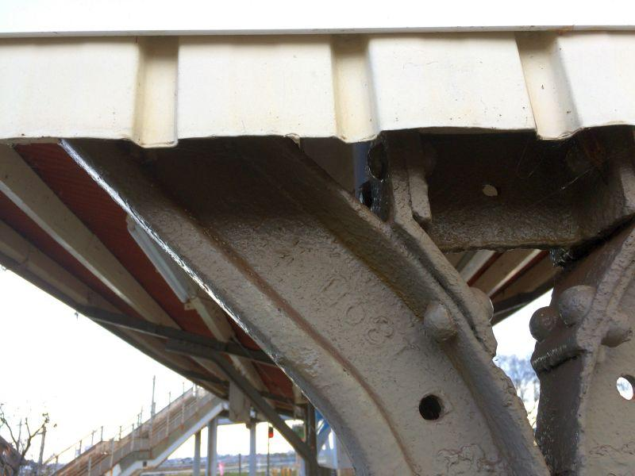

列車乗換駅で見ることが出来る今昔・前編 < 池谷駅 / 徳島県鳴門市 >
池谷駅(いけのたにえき / 徳島県鳴門市)
高徳線(高松 － 徳島)
鳴門線(池谷 － 鳴門)
JR四国の二路線が乗り入れる分岐駅。
通常乗り換えは並列に配置されたHomeか、上下階層の異なるHomeへ移動するものですが、ここ池谷駅は 建設の経緯からそれぞれのHomeが "V字" に配置された、珍しい駅形状になっています。
無人の駅舎がある場所が 「V字」 の広がっている部分。
どちらのプラットHomeへ行くのも、一度跨線橋(歩道橋)に上がらなければいけません。
駅に洗面台があるのはなぜ？

駅舎をくぐったこの場所には 洗面台 が設置されています。
「駅で洗顔？」
現代ではその必要が無いように思えますが、蒸気機関車が列車を引っ張る昔は 必需品。
エアコンの無い時代、夏に暑いからと窓を開ければ 機関車が排出する煤煙(ばいえん)が客車内に充満し、顔じゅう煤(すす)まみれ。
特に高徳線利用で高松方面から来た場合、香川 / 徳島県境付近に待ち構える 急勾配の大坂峠を超えてやってきます。
その間 機関車はフルパワー走行。長大トンネルの通過もあり、いつも以上に排出される煤煙は 窓を開けなくても車内に充満。目的地に着く頃には 乗客の顔が煤で真っ黒になっていました。
当時 全国各地の急勾配区間にある長大隧道(ずいどう、トンネル)には、 "隧道番(ずいどうばん)" というトンネル内の空気を操作するためのスタッフが置かれたほどです。
煤まみれの顔のまま誰かと会う、目的地に行くわけにはいかない...
蒸気機関車時代、列車を下りた乗客がまず行うことは、 「顔を洗うこと」 だったのです。
戦前に設置された駅では、今でもプラットHome等に洗面所が残されているのを 見ることができます。
ただ、現代では 列車の乗降に洗顔は必要ではないので、蛇口はあっても 水道の供給が止められている場合も多いです。
跨線橋上から両線の比較
プラットHomeへ行くために、跨線橋を上がります。
橋上で 高徳線・鳴門線 "T字" に分かれていて、
右... 鳴門線Home
左... 高徳線Home
跨線橋上から振り返ると、「V字」の中に設置された駅舎と 東西に分かれていく両路線形状を眺める事ができる。
パッと見たところ、右の鳴門線より 左の高徳線の方が、高規格である点が見られます。
枕木(マクラギ)
鳴門線(右)... 木製枕木
高徳線(左)... PC枕木
※ PC ＝ Prestressed Concrete
PC製の枕木の方が 木製と比べて耐久性が高く、すなわち特急列車などの高速運転に有利。
全国的に耐用年数の問題から、順次PC製への置き換えが進められていますが、池谷駅付近では 負荷が直線より掛かるカーブ付近が、ひとまずPC枕木に置き換えられています。
一日に数本しか走らないようなローカル線では、木製/PC問わず 枕木の交換自体が経費負担になるので、速度制限をかけて 保守管理費用の軽減を図っている場合があります。
カント(カーブの傾斜)
鳴門線(右)に比べて 高徳線(左)は、カーブの外側(V字の内側)が少し盛り上がっていることがわかります。
人でも車でも、カーブを曲がる際は 遠心力が働き、外へ外へ向かおうとします。速度が早ければ猶更。
それをクリアする方法の一つは 速度を落として曲がることですが、カーブごとに減速していては 乗り心地や所要時間において影響が出ます。
カーブの外軌(＝外側のレール)を内軌(＝内側のレール)より高くすることで、減速せずに通過することができる仕組み。
それを "カント" と言います。
カーブを曲がる列車の写真を見た時に 車両が内側に傾いて見えるのは、そのためです。
カントは別名 "バンク" とも呼ばれます。
主には 競輪や競馬で出てくる単語。それらもカーブを より高速で曲がることが要求される特性は同じ。スピードを落とさずコーナーをクリアすることができるよう、走路の内側が低く 外側が高くなるように、改良が加えられています。
カーブの形状に歴史
高徳線(左)は 特急が運行されているので、前述のカントと併せて 高速運転に適したカーブ径に改良されています。
レール自体も継ぎ目(＝振動やロスを生む)が少ない 一本が長いものが採用されていて、一定の径で伸びている印象を受けます。
鳴門線(右)は 高徳線と比べて カーブの径が不規則なように見えます。
これはレール一本が短く 継ぎ目が多いことが作用しているものと思われます。
長いレール...
〇 高速で安定した走行が可能
× 継ぎ目による振動が少なくなる
× 運搬に費用がかかる
短いレール...
〇 分割して運べるため、運搬が容易
× 継ぎ目による振動が増える
× 高速で安定しない
各駅停車だけが行き来する鳴門線と違って、高徳線は最新鋭の特急列車が運行されている幹線。
両者の違いは、路線が持つ性格(＝輸送ニーズ)が 反映された結果と言えそうです。
プラットHome屋根に用いられている柱の秘密
鳴門線 / 高徳線
どちらも一面二線の島式プラットHome。Home中央部を覆う屋根があるのも共通ですが、それぞれ形状が異なります。
高徳線Home
特徴は 屋根を支える柱に鋼材が用いられていることですが、元々はレールとして使用されていたものが 転用されています。
それらをよく観察してみると、
アルファベットの刻印が見えてきます。
CA●●ELLS STEEL W●●...
製造元が刻印されていて 全てを解読することはできませんが、おそらく "Charles Cammell" の製品と同定することができます。
チャーリーズ・キャンメル社とは、当時存在した イングランドの製鉄会社。
日本が自前でレールを賄うことができるようになったのは、第一次世界大戦で鋼材の輸入が途絶えたことが一つの契機。
明治の鉄道黎明期から 長い間、鉄道敷設に関わる技術・資材は、共に外国頼みでした。工事の技術がある程度確立されてからも、レールの調達は輸入に頼っていた。

上の鋼材と同じ部分ではありませんが、こちらには
1890
と、製造年(？)が刻印されていることから、
これらの鋼材は元々19世紀に日本に輸入されたレールで、開業が早かった線区で用いられていたことが想像できます。
"1890" が西暦だとすると、今から約130年前。
遠く離れた異国の製鉄所でレールが製造され、
それがタンカーに載せられて、一か月以上の船旅を経て 日本に到着。
東海道本線など 当時開通していた重要幹線で用いられ、
使用年数の経過により レールとしての使命を終える。
レールは再成形され柱に姿を変えて、この場所にやってきた。 ← 今ここ
このレールが どれくらいの距離を旅して、
レール時代は庶民・要人関わらず どれだけの人々の移動に寄与して、
その都度動かされるのに どれだけの人の力を借りてきたのか...
今は柱となったレールから、計り知れないドラマを想像することができます。
UNION D 189●
こちらはドイツ製のレールで、ウニオン社製。
"D" の刻印は 同社の生産拠点があった、Dortmund(ドルトムント)の頭文字。
ドルトムント市は、工業地帯・ルール地方を代表する ドイツ西部の都市。
ドイツのプロサッカーリーグ・ブンデスリーガに加盟する、ボルシア・ドルトムント の本拠地としても有名です。100年以上の歴史がある ボルシア・ドルトムントの創設は1909年なので、今に至る強豪クラブチームが産声を上げたのと同じくらいの時期に、このレールは造られ 日本にやってきたことになります。
日本国内で見ることができる ウニオン社製のレールにおいて、20世紀に製造されたレールには Dの刻印が入っていないため、Dの刻印があるものは 希少な存在。
また 記録に残っている中では、同社のレールは 東日本に輸入された例が多い。
現役を終えて、誰かの手によって西日本の四国という島に はるばるやってきて、必要とされながらも 誰に干渉されることもなく余生を過ごしている...
ある種、幸せな存在ではないでしょうか。
こちらは 鳴門線のプラットHomeと、Home屋根。
ぱっと見、高徳線Homeの屋根がV字になっているのに対して、鳴門線Homeは逆V字。
屋根を支える柱は鋼材ではなく、木製の柱が用いられています。
木材の耐用年数から言えば 当時のままの柱とは なかなか難しく、何度か再建されたのではないかと想像します。
池谷駅
< 自家用車 >
高松駅から 約1時間10分、60km
高知龍馬空港から 約20分、11km
< 公共交通機関 >
JR高徳線・鳴門線 池谷駅 下車
コトバスステーション鳴門 下車 ... 1.6km ... 金毘羅前駅 ～ 列車二駅 ～ 池谷駅
※ 主な地点からの最速・最短距離
続き
2019,2/6 列車乗換駅で見ることが出来る今昔・後編 < 池谷駅 / 徳島県鳴門市 >
関連記事
2018,2/23 空から見る徳島県 < 徳島県東部・淡路島 >
2018,4/24 四国八十八ヶ所の第一歩となるローカル駅 < 板東駅 / 徳島県鳴門市 >